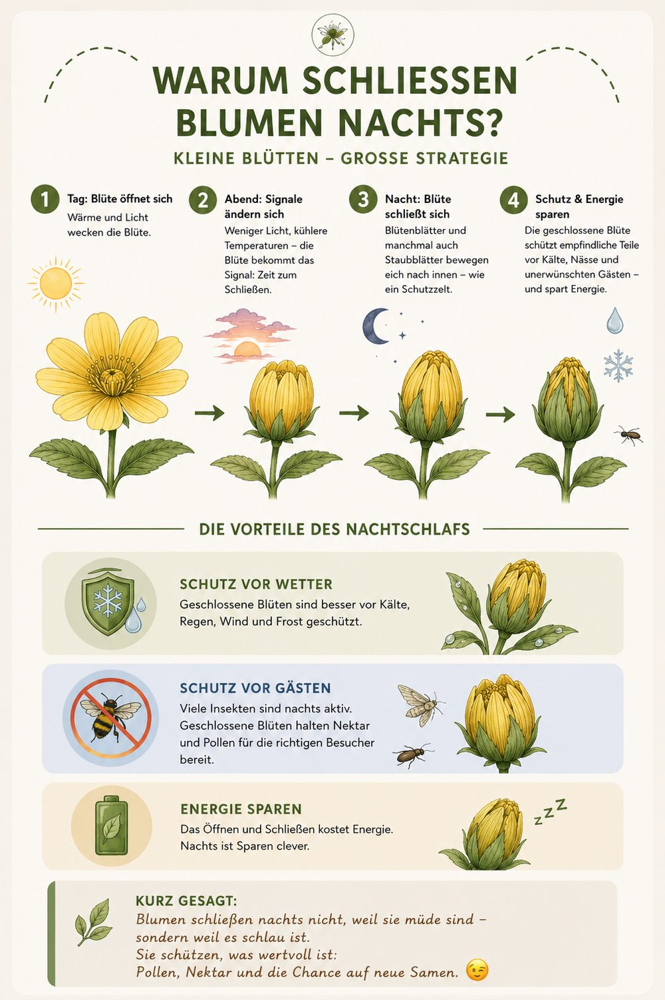

Warum schließen Blumen nachts?
Kleine Blüten – große Strategie.
👉 Viele Blüten falten abends ihre Blütenblätter zusammen. Das schützt den empfindlichen Pollen und den Nektar vor Kälte, Tau und Regen – und vor Gästen, die nachts ohnehin nicht bestäuben. Morgens öffnen sie sich wieder, pünktlich zu ihren Bestäubern. Eine eingebaute „innere Uhr" gibt dabei den Takt vor.